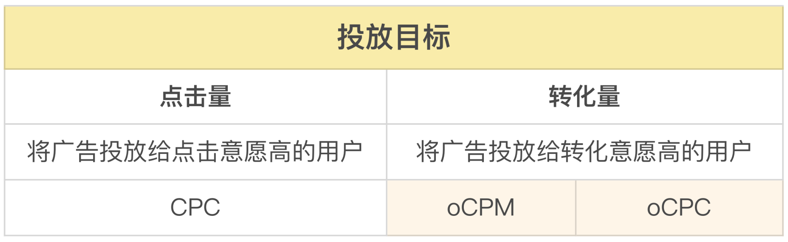
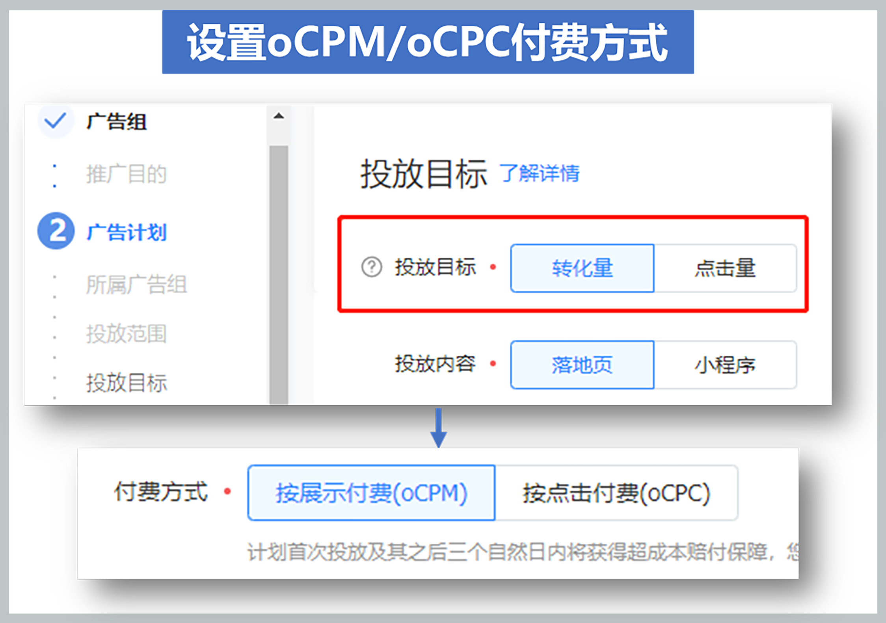
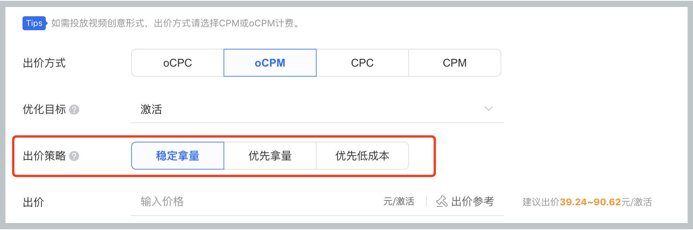
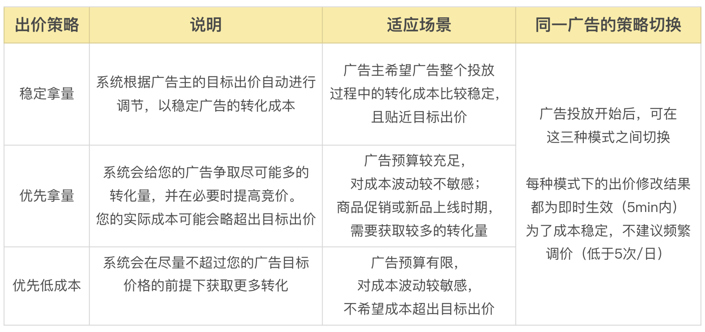
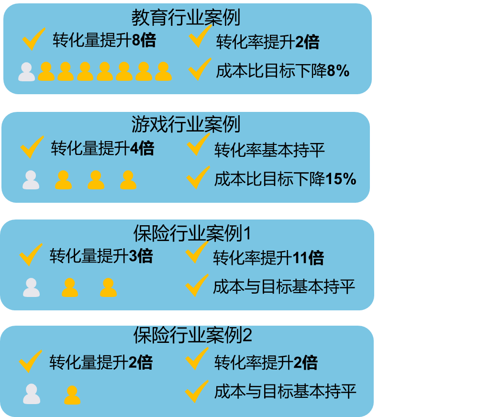
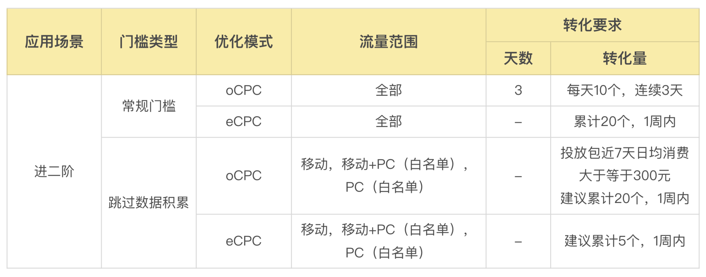
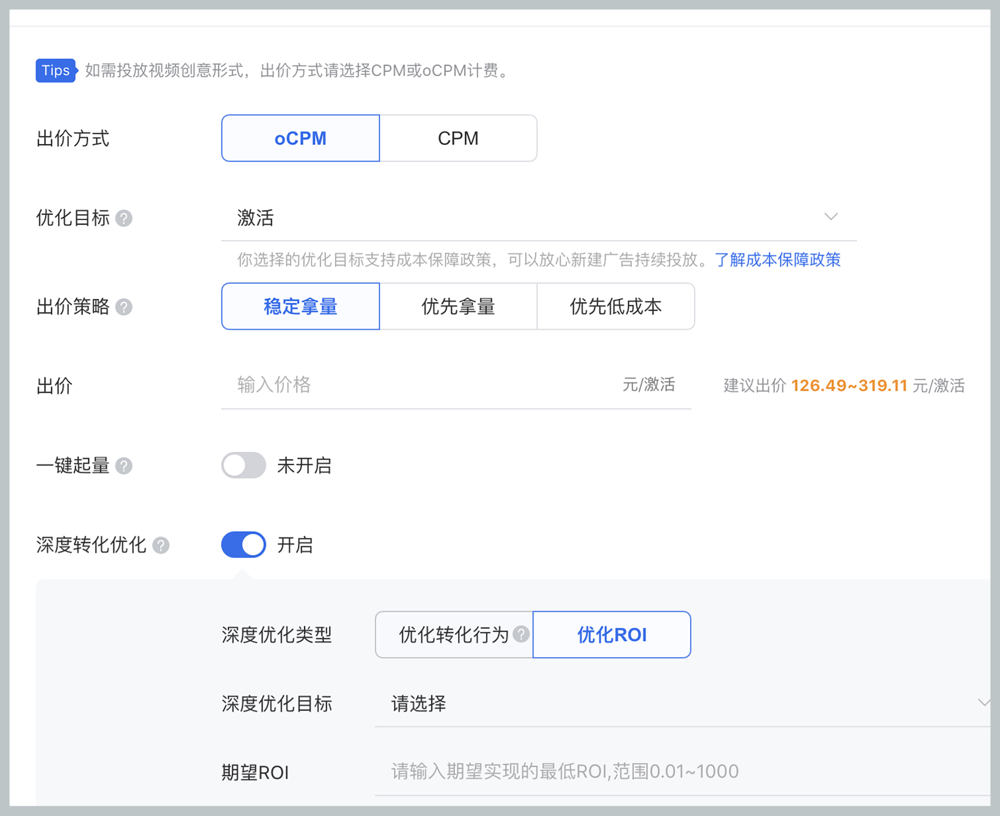

- 00 开篇词 作为一名互联网人，你为什么必须了解广告产品？.md.html
- 01 业务逻辑：广告产品的前世今生和商业模式是怎样的？.md.html
- 02 业务链条：广告主、媒体、第三方等分别如何看待广告产品？.md.html
- 03 头部玩家：从BAT到跳动的字节，广告产品有哪些变化与发展趋势？.md.html
- 04 产品体系：互联网大厂的广告产品存在哪些共性和区别？.md.html
- 05 变现模式：什么样的产品适合采用广告模式变现？.md.html
- 06 产品路线：大厂和小厂的广告产品发展路线有什么区别？.md.html
- 07 计价与效果（上）：如何制定合理的计价方式？.md.html
- 08 计价与效果（下）：如何制定合理的效果评估指标？.md.html
- 09 效果优化：如何一步步从提升曝光量深入到提升销量？.md.html
- 10 流量优化：如何兼顾广告收入和用户体验？.md.html
- 11 物料生产：如何满足广告主的创意需求？.md.html
- 12 精准定向：如何建立一个成熟的用户标签体系？.md.html
- 13 转化优化：互联网大厂如何利用算法优化广告效果？.md.html
- 14 程序化交易：程序化交易是否可以提升广告效果？.md.html
- 15 需求调研：广告产品潜在需求的调研流程是怎样的？.md.html
- 16 平台建设：如何从0到1建立一个完整的广告产品平台？.md.html
- 17 职业发展：新人入行，如何判断自己是否适合做广告产品？.md.html
- 18 团队建设：如何搭建一个高效的广告产品团队？.md.html
- 19 跨团队合作：产研团队和销售端、媒体端、市场端如何合作？.md.html
- 20 产品运营：不同发展阶段如何制定业务目标和运营策略？.md.html
- 21 广告产品彩蛋：课程答疑与推荐书目.md.html
- 结束语 你想要成为什么样的互联网广告产品人？.md.html
- 捐赠
13 转化优化：互联网大厂如何利用算法优化广告效果？
你好，我是郭谊。
关于效果优化的策略，我们已经通过前面三讲的内容，对如何提高广告效果有了深入的了解，掌握了流量及用户体验、物料生产和精准定向三方面的优化密码。那我们有了流量、优质物料，并且能够把广告精准地投放给目标人群，是不是就一定能得到一个好的转化效果呢？
并不是，前面我们说的只是一些必要的前提，但如果想要全方位地提高广告效果，还需要关注广告产品的最后一个环节——转化。因为广告主投放广告的根本目的就是寻求转化，所以媒体平台也希望能够优化广告产品的转化效果来吸引广告主。
所以，我们今天的重头戏就是讲解如何利用算法与技术优化广告转化效果。
效果广告投放的两难境地：转化成本 VS 转化量
前面，我们提到过，效果广告以超过67%的占比，成为了中国互联网广告预算的大头。在BAT、字节等大的媒体平台上，效果广告以CPC实时竞价广告为主。在这种广告产品的投放中，广告主或其代理公司通过针对每个广告点击出价，系统自动把这些点击出价换算成eCPM，根据eCPM价格来决定优先展示哪个广告。
在这个流程中，效果广告主面临着一种微妙的处境：如果对每个广告点击出价太低，虽然可以控制转化成本，但是有可能竞争不到广告曝光量；如果出价太高，虽然能竞争到更多的曝光量，但是有可能会导致转化成本过高。广告主处于转化成本和转化量之间的两难处境。
因此，在传统的效果广告投放中，广告优化人员除了要不断优化物料及用户标签的选择，还需要根据投放后的数据，频繁地调整出价。这种状况，究其根本，是因为整个媒体平台的广告流量是个“黑盒”，广告主不知道里面究竟有哪些流量是适合自己的，只能通过广告优化人员投放后的结果来一点点尝试。
在传统的效果广告中，广告优化人员最担心的，是碰到太多“会吃掉诱饵但是不会上钩的鱼”，也就是点击了广告却没有转化的人群。这些人群包括以下类型：
- 对互联网不够熟悉的人群：例如边远地区人群、中老年人群，如果你看一下广告投放系统的后台统计数据，会发现这些人群的点击率往往是最高的，原因是他们不太能分得清广告和媒体的内容。
- 会被活动奖励吸引的人群：例如，某汽车客户投放广告，引导用户参加线下活动，用户踊跃报名，但是现场来的却有很多未成年人，根本不是该客户的目标人群。更别提众多的“羊毛党”了，导致游戏行业等有奖活动较多的广告主，还需要在活动中专门设置一些防羊毛党的手段。
- 被物料诱导的人群：为了吸引用户点击，一些广告物料中会植入帅哥、美女、萌宠或者受欢迎的明星形象等，一些不太规范的媒体平台还会上线一些容易导致误点击的物料。点击了这些物料的人群往往是被物料本身诱导甚至误点击，转化的概率当然就很小了。
广告优化人员想在媒体平台的海量用户中，找到那些真正对广告主的产品感兴趣，不仅会点击广告、也会最终形成转化或购买的人群，从而找到转化成本和转化量的最佳平衡点。面对这样的需求，我们可以提供什么样的产品呢？
平衡：转化优化产品的诞生
在这个方面，Facebook率先推出了自家的转化优化产品：Optimized Cost Per 1000 Impressions，直译为“优化后的CPM”，简称oCPM。区别于Facebook以往按照CPM或者CPC付费的常规广告产品，oCPM是按照广告曝光成本付费，同时按照转化目标优化的一种全新产品。
oCPM产品的原理是：广告主把用户转化数据回传给Facebook，Facebook根据这些数据，分析点击了广告并转化的用户的特征。之后根据这些高转化用户的特征找到更多类似用户，并针对这类人群投放广告。通俗地说，也就是Facebook利用对自身流量大盘的洞察，结合广告主高转化人群的特征，帮助广告主快速找到转化成本与转化量之间的平衡点，捕捉到更多不光吃掉鱼饵也会真正上钩的“鱼”，也在广告主和媒体平台双方的利益之间找到了更好的平衡点。
媒体平台进行广告效果优化的两大原则：- 原则一：eCPM必须最大化；- 原则二：广告主的实际效果（CPA）必须在广告主可接受的合理范围内。
Facebook推出oCPM产品的初衷，就是为了在合理控制转化成本的前提下，给效果广告主的大头——游戏行业的广告主，争取更多的转化量。oCPM产品推出后，取得了显著的效果，很快被广告主和广告优化人员广泛使用。国内的头部玩家也纷纷跟进，目前，BAT、字节等大厂都已经推出自己的转化优化产品，虽然具体名称不同，但是基本原理都是承接了Facebook的oCPM。
国内的主流媒体广告平台推出的转化优化产品除了oCPM，还有oCPC，区别在于前者以CPM进行计费，后者以CPC进行计费，但都是按照广告主的转化目标进行优化。相比之下，oCPM除了以转化为目标优化，也可以选择以点击为目标优化，因此也适合那些按照曝光量购买，同时对点击成本控制有期待的广告主；oCPC则能更直接地满足那些看重转化效果和转化量的效果广告主的需求。

如何应用转化优化产品？
介绍了这么多转化优化产品的信息，那这些产品我们要怎么使用呢？接下来，我会结合字节、腾讯、百度等头部广告平台的规则，给你介绍一下这些转化优化产品的应用及要点。
对于广告优化人员来说，应用转化优化产品有以下几个步骤：
- 建立转化归因链路：因为系统需要利用广告主的用户转化数据，进行机器学习并建立投放模型，所以需要广告主对系统上报转化数据。一般来说，如果广告主的转化目标在App内完成，可以选择通过API或者SDK方式上报；如果转化目标是在网页上完成，可以选择通过API或者JS方式上报。（具体可以参考各平台的转化归因技术文档）
当然，如果广告主从广告曝光、点击到转化的全链路都是在你的媒体平台上完成的，那就不一定需要专门建立转化归因链路这一步，直接进行广告设置就可以。
- 选择转化优化投放方式并设置转化目标：在广告投放前，设置广告时，选择oCPM或oCPC付费方式，并填写对转化成本的期待数值，设置完成后开始投放。

转化事件是由广告主自定义的，最早我们在腾讯广告内测的时候，主要是针对App的激活。目前，各大媒体平台都已经提供了丰富的选项，包括下载、注册、加入购物车等等，广告优化人员可以直接从里面选择本次广告投放的转化目标。（具体可以查看对应平台的转化目标示例表）
- 等待系统自动学习，找到平衡点：广告投放开始后，我们需要给系统至少几天的学习时间，让系统找到高转化人群并建模。期间，广告优化人员不要频繁调整出价，等到转化成本和转化量稳定后再说。你可以通俗地理解成：在应用了转化优化产品后，系统将替代人工操作去帮你进行调试，找到当前转化成本下最多的转化量。跟人工操作相比，系统可以利用强大的算法与建模能力，洞察全局流量，突破人工操作下的流量黑盒。


从这个步骤上，我们可以看出，转化优化产品还有一个显著的优点，就是降低广告优化人员在出价调整上投入的时间。广告优化人员可以把更多的精力放到物料优化和精准定向广告的用户标签选择上去。
需要注意的是，系统预估与用户的实际行为难免存在偏差，因此，就单条广告、单天的广告数据而言，实际转化成本不会和优化目标出价完全一致。一般，单天实际转化成本高于出价的比例20%以内是合理的波动范围，广告主可以放心继续投放。
- 如果广告出价合理、投放策略（投放人群与素材的组合）具有竞争力，随着转化数据逐步累积，多天汇总的实际转化成本会非常接近优化目标出价。
- 如果广告出价不合理（例如出价过低），实际转化成本可能与优化目标出价差距较大。广告系统会自动减少广告的曝光量，以减少不必要的损失。针对这类广告，建议调整投放策略（投放人群、素材、出价的组合），或暂停广告。
和Facebook一样，转化优化产品在国内的广告投放应用中，也取得了显著的效果。目前，转化优化产品已经成为各大头部媒体平台的广告产品标配之一。

转化优化产品的最新发展趋势
转眼之间，转化优化产品在国内主流媒体平台的应用也超过5年了。在这些年里，这一系列产品基于广告主的需求以及技术的进步，也在不断地迭代与改进中。这里，我就带你一起来看看有哪些典型的新功能的应用。
- 一键起量：有些广告主在使用转化优化产品前，心里没有底，希望能够做一下测试。在这种情况下，你可以让广告主使用“一键起量”的冷启动测试工具。
字节跳动的一键起量工具：开启起量后，系统将在6小时内拓展探索，为广告主探索原广告投放计划拿不到的增量，并在预算范围内获取尽量多的转化量。6小时后，系统将尽可能花光这笔起量预算，并帮助广告主找到适合后续增加预算继续投放的广告投放模型。
一键起量主要起到的是加速模型学习探索的作用。因此，一键起量工具测试期间，为了拿到更多的增量和快速学习优化模型，广告主的转化成本可能在短期内有大幅上升（例如2-10倍），所以要给一键起量工具设置成本卡控点，例如在转化量达到20个时停止测试。不过，从长期来说，继续使用该模型进行投放，平均转化成本将会降低，直到平缓。
如果一键起量的拿量结果不理想，那么，后续广告优化人员可以对出价、物料、定向等进行进一步优化后，再进行测试。
- 自动出价：因为不是所有广告主都清楚应该如何设定合理的转化目标成本，而且在一些电商大促或新游戏上线大推的营销场景中，广告主愿意为了拿量，放宽对转化目标成本的要求，但又不知道应该放宽到什么程度。所以，针对这些需求，现在已经有了自动出价的功能。
自动出价功能的原理是：在起量期，为了加快广告起量速度、提升广告起量率，自动出价会采用较为激进的探索模式，所以起量期成本可能会有一定程度上的飘高。随着积累了一定曝光量和转化量后，广告进入成熟稳定期，系统会根据消耗进度和成本达成情况，在尽可能花完预算的前提下，不断探索寻找最低转化成本。
同时，自动出价会尽量保证成本在预估范围内均匀花费预算，当消耗速度太快或者成本偏高时，系统会自动下调出价来平稳消耗速度，拟合成本达成。相对于手动出价，自动出价的消耗曲线会相对更平稳一些。

- A/BTest（拆分对比试验）：在第9讲中，我们介绍过A/B Test。在使用转化优化产品时，我们也可以结合A/B Test工具，例如其他设置完全一样的情况下，对比CPC和oCPC两种出价方式下的两条广告，找到转化成本与转化量平衡的最优解。
- 细分产品：你还可以针对特定的广告产品（例如百度的搜索关键词广告）或者垂直行业（例如游戏行业）推出细分的转化优化产品。例如百度针对搜索关键词广告推出了搜索oCPC，结合搜索广告的特点，把转化优化产品的使用划分为一阶和二阶两个阶段，一阶用于模型学习，二阶开启转化优化投放。

还有腾讯，它推出了专门针对游戏客户的“激活+首日付费ROI” 优化功能，专门针对新上线大推的游戏。游戏广告主除了选择oCPM/oCPC出价，还可以选择首日付费ROI为深度转化目标，并填写对首日付费ROI系数的期待数值。

这些细分产品，和特定广告产品的特征或者垂直行业广告主的特殊需求，有着更加紧密的联系，也受到了广告主的普遍认可和广泛应用。
- 赔付政策：转化优化产品有一个特征，就是：因为它是以转化为根本目标的，同时会争取更多的转化量来优化投放模型，所以在实际投放时出价有可能超过广告主事先设置的CPM或者CPC出价。为了让广告主可以更安心地使用转化优化产品，你可以设置一定的赔付政策，给广告主提供更多转化成本保障。具体赔付政策，你可以参考各大媒体平台的相关信息，比如腾讯广告的智能优化成本保障条件。
重点回顾
本讲中，我带你了解了oCPM/oCPC等转化优化产品的来龙去脉以及应用要点。转化优化产品主要具备三大优势：
- 更好地兼顾效果广告主对于转化成本和转化量的期待；
- 更好地平衡了媒体平台的自身收益和广告主的效果期待；
- 降低了广告优化人员在广告出价上投入的实验成本。
转化优化产品使用的主要流程包括建立转化归因链路、选择转化优化投放方式及设置转化目标、等待系统自动学习找到平衡点这三步。如果效果不理想，广告优化人员可以从出价、物料、定向等各个方面进行进一步优化。
如果想进一步提升转化优化产品的使用效果，你可以结合应用一键起量、A/B Test等工具进行测试。如果不清楚应该如何设定目标成本，你也可以选择自动出价功能。各大媒体平台也推出了细分的转化优化产品可供尝试使用。
总的来说，转化优化产品是利用媒体平台对于自身流量大盘的洞察，结合广告主回传的用户转化数据，利用媒体平台的算法能力与系统算力，为广告主自动建立最优的投放模型，在当前广告设置下，快速找到转化成本与转化量的平衡点。
最后，即使使用了转化优化产品，广告优化人员也还是需要对出价、物料和定向进行优化，尤其是后两者，才能取得更好的广告效果。现在的广告投放流程，依然是一个人机结合的过程，是广告优化人员的经验和系统优化能力的结合。
实战演练
请设想你去某媒体广告平台面试策略产品经理，面试官要求你比较腾讯、百度、字节跳动三家的转化优化产品/能力。你会从哪些维度进行比较？这些维度下你分别会怎么描述呢？相信完成这样一份作业，会对你的面试大有帮助！
可以把你的答案写在评论区参与讨论，也欢迎你把这节课分享给身边的朋友。我们下节课再见！
© 2019 - 2023 Liangliang Lee. Powered by gin and hexo-theme-book.